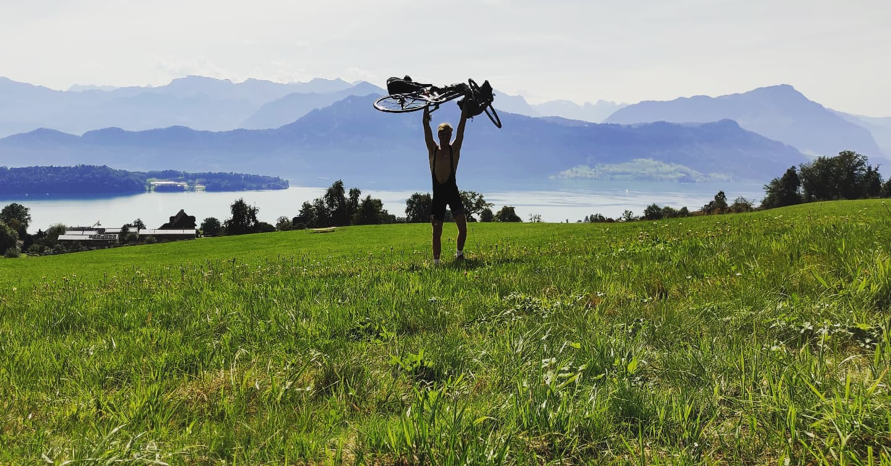

About
This is my website. I created it to put myself out there on the internet and to showcase some of the things I have done thus far in my life. It’s meant to be an informal site composed of posts about my adventures as well as academic projects related to my interests. Most of the things you see here come from my time as a student at ETH Zurich and during some of my travels.
I am a curious person with a lot of interests. I started my academic career at Aalto University studying Mathematics and Engineering Physics. I shortly dropped out and moved to Scotland, a life dream of mine at the time, to study Mechanical Engineering at the University of Glasgow. One year later, I changed to Mechanical Engineering with Aeronautics. After I completed my Bachelor’s degree, I changed fields again to Robotics. Now my main interests lie in computer vision, computer graphics, and AI.
I am quite an ordinary person but I am really motivated to push my limits. In the summer of 2021, I rode my bicycle from my home in Espoo, Finland to Zurich, Switzerland to start my masters degree, a journey that took me 13 days and 1200+ km. I have also ridden my bike across northern Italy with my flatmate Ben. I am an avid runner, having ran a few marathons and half-marathons now, and I am passionate about yoga and moving my body.
I like to play the guitar, eat lentils, and sleep. I am not sure what the future holds yet, but I would like to get more involved with research and try to put a small dent in the world.
